Textual in Steps¶
ctx.textual is the public TUI API available inside workflow steps.
Use it when you want your custom step to look and behave like the rest of Titan: consistent headings, status output, prompts, markdown, tables, and loading indicators.
Read this page after Workflows and Workflow Steps if you want your own Python steps to use Titan's built-in TUI patterns instead of printing plain text or building ad-hoc prompts.
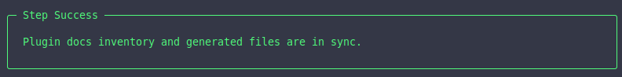
When to use ctx.textual¶
Use ctx.textual when your step needs to:
- show progress or rich output
- display structured information such as markdown, panels, or tables
- ask the user for input
- keep the visual style aligned with Titan's built-in steps
If your step is just a simple shell command with no interaction, a command step may be enough.
Basic pattern¶
from titan_cli.engine import WorkflowContext, WorkflowResult, Success, Error
def my_step(ctx: WorkflowContext) -> WorkflowResult:
if not ctx.textual:
return Error("Textual UI context is not available for this step.")
ctx.textual.begin_step("My Step")
value = ctx.get("some_key")
if not value:
ctx.textual.end_step("error")
return Error("Missing some_key")
with ctx.textual.loading("Processing..."):
result = value.upper()
ctx.textual.success_text("Done")
ctx.textual.end_step("success")
return Success("Step completed", metadata={"result": result})
Step lifecycle methods¶
begin_step(title)¶
Starts the visual step block.
end_step(status)¶
Closes the step block visually.
This visual status is related to, but separate from, the WorkflowResult you return.
Text output methods¶
Use these methods instead of inventing your own ad-hoc formatting.
ctx.textual.text("Normal message")
ctx.textual.bold_text("Important message")
ctx.textual.dim_text("Secondary information")
ctx.textual.primary_text("Primary color message")
ctx.textual.bold_primary_text("Bold primary message")
ctx.textual.success_text("Operation successful")
ctx.textual.warning_text("Warning message")
ctx.textual.error_text("Operation failed")
Recommended rule: prefer these dedicated methods over manual Rich/Textual markup so your step stays visually consistent with Titan.
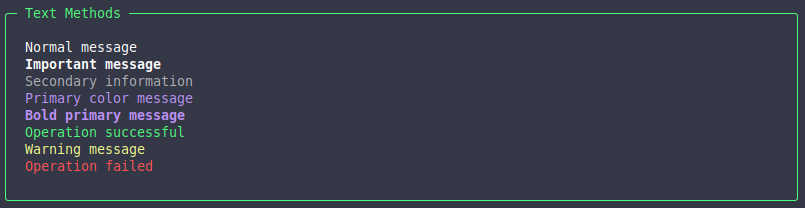
Loading indicators¶
Use loading() for operations that may take noticeable time.
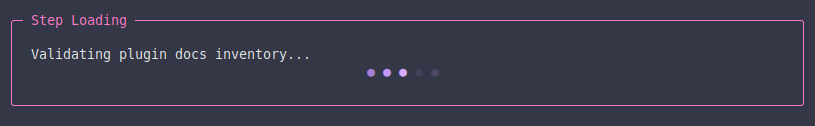
Markdown output¶
Use markdown() when you want Titan to render long-form structured content.
This is especially useful for AI-generated content, issue summaries, and review output.
Mounting widgets¶
Use mount() when you want to render a Textual/Titan widget directly.
from titan_cli.ui.tui.widgets import Panel
ctx.textual.mount(
Panel(text="Operation completed", panel_type="success")
)
Common use cases:
- panels for highlighted messages
- tables for tabular data
- richer widgets exposed by Titan's TUI layer
Input methods¶
ctx.textual also gives you a consistent input API.
ask_text()¶
Use this when the user needs to provide a single-line value such as a title, branch name, or identifier.
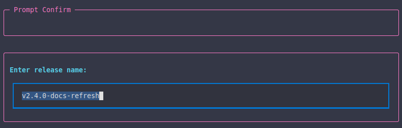
ask_multiline()¶
Use this when the user needs to enter longer free-form content such as a description, release notes, or a review comment.
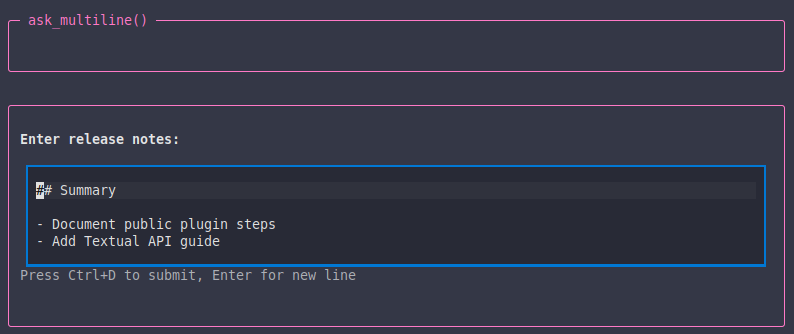
ask_confirm()¶
Use this when the user only needs to answer yes or no.
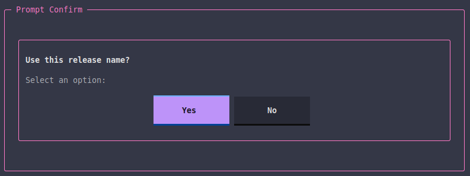
ask_choice()¶
Use this when the user must pick one option.
from titan_cli.ui.tui.widgets import ChoiceOption
choice = ctx.textual.ask_choice(
"What would you like to do?",
options=[
ChoiceOption(value="send", label="Send", variant="primary"),
ChoiceOption(value="edit", label="Edit", variant="default"),
ChoiceOption(value="skip", label="Skip", variant="error"),
],
)
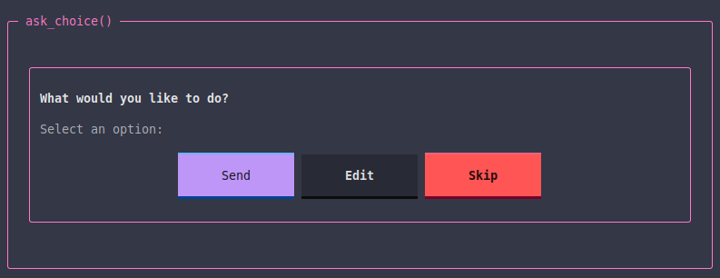
ask_multiselect()¶
Use this when the user may choose multiple items.
from titan_cli.ui.tui.widgets import SelectionOption
selected = ctx.textual.ask_multiselect(
"Select which checks to include:",
[
SelectionOption(value="lint", label="Run linter", selected=True),
SelectionOption(value="tests", label="Run tests", selected=True),
SelectionOption(value="docs", label="Validate docs", selected=False),
],
)
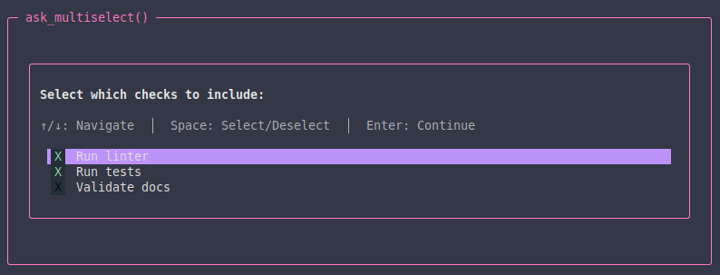
ask_option()¶
Use this for styled option lists when you want more structured selection UI.
from titan_cli.ui.tui.widgets import OptionItem
selected = ctx.textual.ask_option(
"Select a plugin docs workflow:",
[
OptionItem(
value="sync-plugin-docs",
title="Sync Plugin Docs",
description="Generate machine-readable step inventories for plugin docs.",
),
OptionItem(
value="validate-plugin-docs",
title="Validate Plugin Docs",
description="Check docstring conventions, grouping metadata, and generated outputs.",
),
],
)
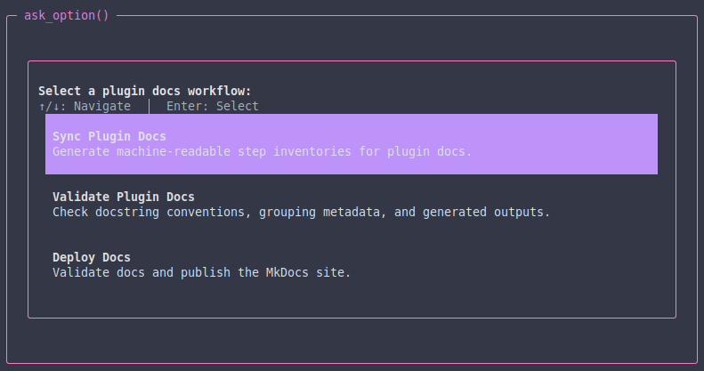
ctx.textual and workflow results¶
The visual step status and the returned workflow result are related but not identical.
Typical pairing:
Success(...)->end_step("success")Error(...)->end_step("error")Skip(...)->end_step("skip")Exit(...)-> usuallyend_step("success")orend_step("skip"), depending on context
If the step is stopping the whole workflow early, that is controlled by Exit, not by end_step().
Example: simple interactive step¶
from titan_cli.engine import WorkflowContext, WorkflowResult, Success, Error
def ask_release_name(ctx: WorkflowContext) -> WorkflowResult:
if not ctx.textual:
return Error("Textual UI context is not available for this step.")
ctx.textual.begin_step("Release Name")
try:
name = ctx.textual.ask_text("Enter release name:")
except (KeyboardInterrupt, EOFError):
ctx.textual.end_step("error")
return Error("User cancelled")
if not name:
ctx.textual.end_step("error")
return Error("Release name is required")
ctx.textual.success_text(f"Using release name: {name}")
ctx.textual.end_step("success")
return Success("Release name captured", metadata={"release_name": name})
Example: display structured output¶
from titan_cli.engine import WorkflowContext, WorkflowResult, Success, Error
from titan_cli.ui.tui.widgets import Panel
def show_summary(ctx: WorkflowContext) -> WorkflowResult:
if not ctx.textual:
return Error("Textual UI context is not available for this step.")
ctx.textual.begin_step("Summary")
ctx.textual.mount(Panel(text="Everything looks good", panel_type="success"))
ctx.textual.end_step("success")
return Success("Summary shown")
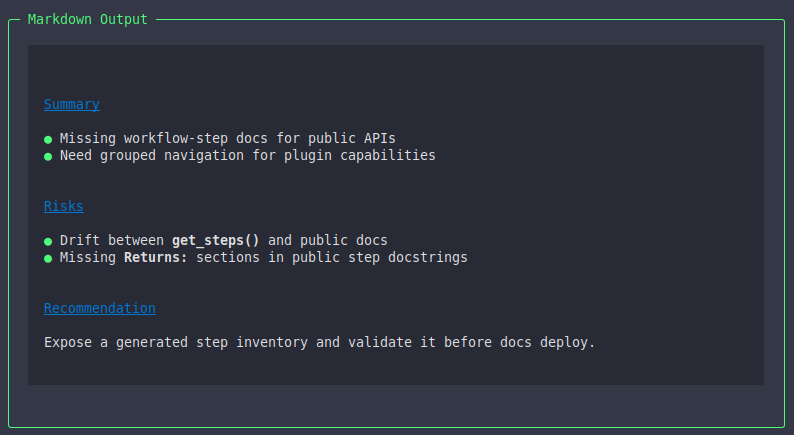
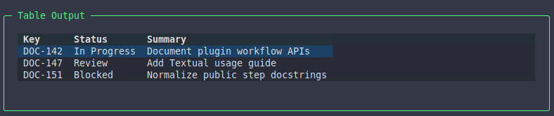
Good defaults¶
When in doubt:
- use
begin_step()andend_step() - use dedicated text methods like
success_text()anderror_text() - use
loading()around long operations - use
markdown()for long-form structured text - use
mount()for tables or panels